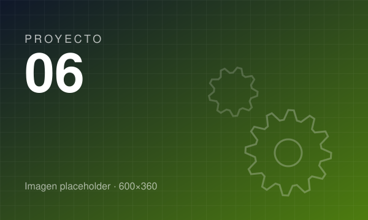

Proyecto 06

Problema
[Qué problema resuelve el proyecto y en qué parte del proceso aplica.]
Método
[Sensores, controlador, software y modelo utilizados.]
Resultado
[Demo, métricas y fotos de la maqueta.]
Límites y próximos pasos
[Qué falta validar y qué se haría después.]